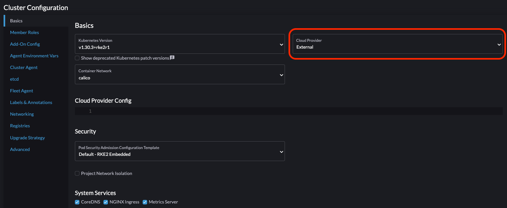
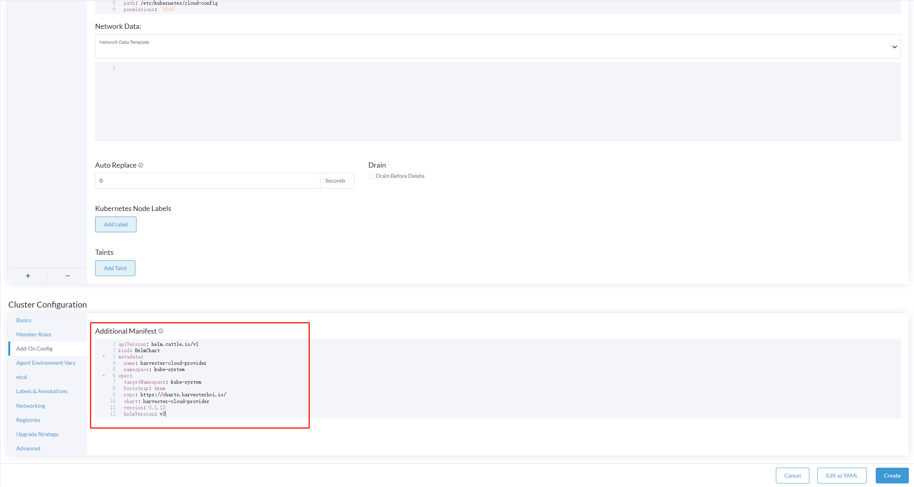
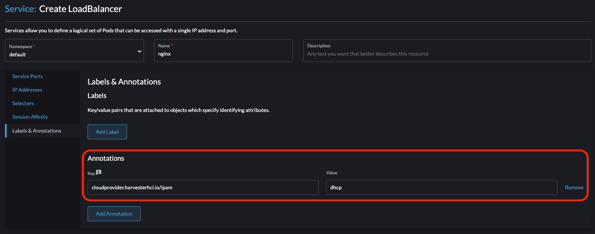

|
本文档采用自动化机器翻译技术翻译。 尽管我们力求提供准确的译文，但不对翻译内容的完整性、准确性或可靠性作出任何保证。 若出现任何内容不一致情况，请以原始 英文 版本为准，且原始英文版本为权威文本。 |
Harvester 云提供商
向后兼容性通知
|
如果您使用的 Harvester 云提供商版本为 v0.2.2 或更高，请注意已知的向后兼容性问题。如果您的 Harvester 版本低于 v1.2.0，并且您打算使用更新的 RKE2 版本（即 >= 有关详细的支持矩阵，请参阅官方 Harvester CCM 和 CSI Driver 与 RKE2 发布 部分的 网站。 |
正在部署
先决条件
-
Kubernetes 集群建立在 Harvester 虚拟机之上。
-
作为来宾 Kubernetes 节点运行的 Harvester 虚拟机位于同一名称空间中。
-
Harvester 虚拟机来宾的主机名与其对应的 Harvester 虚拟机名称匹配。使用 Harvester CSI 驱动程序时，来宾集群的 Harvester 虚拟机不能有与其 Harvester 虚拟机名称不同的主机名。我们希望在未来的 Harvester 版本中 去除此限制。
|
每个 Harvester 虚拟机必须具有 要检查内核模块是否可用，请访问虚拟机并运行以下命令： 如果出现以下情况，则可能缺少内核模块：
默认情况下， 为了消除在来宾集群配置后需要手动干预的情况，请使用 openSUSE 构建服务（OBS）构建您自己的云映像。您必须在 |
使用Harvester节点驱动程序部署到RKE2集群
在使用Harvester节点驱动程序启动RKE2集群时，请选择`Harvester`云提供商。节点驱动程序将自动帮助部署CSI驱动程序和CCM。

从Rancher v2.9.0开始，您可以使用*数据目录配置路径*字段为云配置数据配置特定文件夹。

手动部署到RKE2集群
-
使用脚本`generate_addon.sh`生成云配置数据，然后将数据放置在每个自定义节点上（目录：
/etc/kubernetes/cloud-config）。curl -sfL https://raw.githubusercontent.com/harvester/cloud-provider-harvester/master/deploy/generate_addon.sh | bash -s <serviceaccount name> <namespace>该脚本在操作Harvester集群时依赖于`kubectl`和`jq`，并且仅在获得对`Harvester Cluster` kubeconfig文件的访问权限时才能正常工作。
您可以在`/etc/rancher/rke2/rke2.yaml`路径的Harvester管理节点之一中找到`kubeconfig`文件。服务器IP必须替换为VIP地址。
内容示例：
apiVersion: v1 clusters: - cluster: certificate-authority-data: <redacted> server: https://127.0.0.1:6443 name: default # ...您必须指定将要创建客户集群的名称空间。
输出示例：
########## cloud config ############ apiVersion: v1 clusters: - cluster: certificate-authority-data: <CACERT> server: https://HARVESTER-ENDPOINT/k8s/clusters/local name: local contexts: - context: cluster: local namespace: default user: harvester-cloud-provider-default-local name: harvester-cloud-provider-default-local current-context: harvester-cloud-provider-default-local kind: Config preferences: {} users: - name: harvester-cloud-provider-default-local user: token: <TOKEN> ########## cloud-init user data ############ write_files: - encoding: b64 content: <CONTENT> owner: root:root path: /etc/kubernetes/cloud-config permissions: '0644' -
在RKE2集群创建页面，转到*集群配置*屏幕，并将*云提供商*的值设置为*外部*。

-
将`cloud-init user data`内容复制并粘贴到*机器池*> 显示高级> 用户数据。

-
将用于
harvester-cloud-provider的HelmChartCRD 添加到 集群配置 > 附加配置 > 附加清单。您必须将
<cluster-name>替换为您的集群名称。apiVersion: helm.cattle.io/v1 kind: HelmChart metadata: name: harvester-cloud-provider namespace: kube-system spec: targetNamespace: kube-system bootstrap: true repo: https://raw.githubusercontent.com/rancher/charts/dev-v2.9 chart: harvester-cloud-provider version: 104.0.2+up0.2.6 helmVersion: v3 valuesContent: |- global: cattle: clusterName: <cluster-name>
-
要创建负载均衡器，请添加注释
cloudprovider.harvesterhci.io/ipam: <dhcp|pool>。
部署到 RKE2 自定义集群（实验性）

-
使用脚本`generate_addon.sh`生成云配置数据，然后将数据放置在每个自定义节点上（目录：
/etc/kubernetes/cloud-config）。curl -sfL https://raw.githubusercontent.com/harvester/cloud-provider-harvester/master/deploy/generate_addon.sh | bash -s <serviceaccount name> <namespace>该脚本在操作Harvester集群时依赖于`kubectl`和`jq`，并且仅在获得对`Harvester Cluster` kubeconfig文件的访问权限时才能正常工作。
您可以在`/etc/rancher/rke2/rke2.yaml`路径的Harvester管理节点之一中找到`kubeconfig`文件。服务器IP必须替换为VIP地址。
内容示例：
apiVersion: v1 clusters: - cluster: certificate-authority-data: <redacted> server: https://127.0.0.1:6443 name: default # ...您必须指定将要创建客户集群的名称空间。
输出示例：
########## cloud config ############ apiVersion: v1 clusters: - cluster: certificate-authority-data: <CACERT> server: https://HARVESTER-ENDPOINT/k8s/clusters/local name: local contexts: - context: cluster: local namespace: default user: harvester-cloud-provider-default-local name: harvester-cloud-provider-default-local current-context: harvester-cloud-provider-default-local kind: Config preferences: {} users: - name: harvester-cloud-provider-default-local user: token: <TOKEN> ########## cloud-init user data ############ write_files: - encoding: b64 content: <CONTENT> owner: root:root path: /etc/kubernetes/cloud-config permissions: '0644' -
在 Harvester 集群中创建一个虚拟机，设置如下：
-
基础 选项卡：最低要求为 2 个处理器和 4 GiB 的 RAM。所需的磁盘空间取决于虚拟机镜像。

-
网络 选项卡：指定网络名称，格式为
nic-<number>。
-
高级选项 选项卡：复制并粘贴 云配置用户数据 屏幕的内容。

-
-
在 集群配置 屏幕的 基础 选项卡上，选择 Harvester 作为 云提供商，然后选择 创建 来启动集群。

-
在 注册 选项卡上，执行在虚拟机上运行 RKE2 注册命令所需的步骤。

部署到使用 Harvester 节点驱动程序的 K3s 集群（实验性）
使用 Harvester 节点驱动程序启动 K3s 集群时，您可以执行以下步骤来部署 Harvester 云提供商：
-
使用
generate_addon.sh生成云配置。curl -sfL https://raw.githubusercontent.com/harvester/cloud-provider-harvester/master/deploy/generate_addon.sh | bash -s <serviceaccount name> <namespace>
输出可能如下所示：
########## cloud config ############ apiVersion: v1 clusters: - cluster: certificate-authority-data: <CACERT> server: https://HARVESTER-ENDPOINT/k8s/clusters/local name: local contexts: - context: cluster: local namespace: default user: harvester-cloud-provider-default-local name: harvester-cloud-provider-default-local current-context: harvester-cloud-provider-default-local kind: Config preferences: {} users: - name: harvester-cloud-provider-default-local user: token: <TOKEN> ########## cloud-init user data ############ write_files: - encoding: b64 content: <CONTENT> owner: root:root path: /etc/kubernetes/cloud-config permissions: '0644' -
将
cloud-init user data内容复制并粘贴到 机器池 > 显示高级 > 用户数据。 -
将以下
HelmChartyaml 的harvester-cloud-provider添加到 集群配置 > 附加配置 > 附加清单。apiVersion: helm.cattle.io/v1 kind: HelmChart metadata: name: harvester-cloud-provider namespace: kube-system spec: targetNamespace: kube-system bootstrap: true repo: https://charts.harvesterhci.io/ chart: harvester-cloud-provider version: 0.2.2 helmVersion: v3
-
以以下方式禁用
in-tree云提供商：-
单击
Edit as YAML按钮。
-
禁用
servicelb并将disable-cloud-controller: true设置为禁用默认的 K3s 云控制器。machineGlobalConfig: disable: - servicelb disable-cloud-controller: true -
添加
cloud-provider=external以使用 Harvester 云提供商。machineSelectorConfig: - config: kubelet-arg: - cloud-provider=external protect-kernel-defaults: false

-
在这些设置到位的情况下，K3s 集群应该能够成功使用外部云提供商进行配置。
升级云提供商
升级 RKE2
可以通过升级 RKE2 版本来升级云提供商。您可以通过 Rancher UI 按如下方式升级 RKE2 集群：
-
单击 ☰ > 集群管理。
-
找到您想要升级的来宾集群并选择 ⋮ > 编辑配置。
-
选择 Kubernetes 版本。
-
单击 保存。
升级 K3s
通过 Rancher UI 升级 K3s 云提供商，方法如下：
-
单击 ☰ > K3s 集群 > 应用 > 已安装应用。
-
找到云提供商图表并选择 ⋮ > 编辑/升级。
-
选择 版本。
-
单击 下一步 > 更新。
|
对于 单节点来宾集群 的升级过程可能会停滞，当新的 有关更多信息，请参见 此 GitHub 问题评论。要解决此问题，请手动删除旧的`harvester-cloud-provider` pod。您可能需要多次执行此操作，直到新的 pod 能够成功调度。 |
负载均衡器支持
一旦您部署了 Harvester 云提供商，您可以利用 Kubernetes LoadBalancer 服务将微服务暴露给外部世界。创建 Kubernetes LoadBalancer 服务会为该服务分配一个专用的 Harvester 负载均衡器，您可以通过 Rancher UI 中的 Add-on Config 进行调整。

IPAM
Harvester 内置的负载均衡器提供 DHCP 和 池 模式，您可以通过向其相应服务添加注释 cloudprovider.harvesterhci.io/ipam: $mode 来进行配置。从 Harvester 云提供商 >= v0.2.0 开始，它还引入了一种独特的 共享 IP 模式。在此模式下，服务与其他服务共享其负载均衡器 IP。
-
*DHCP：*需要一个 DHCP 服务器。Harvester 负载均衡器将向 DHCP 服务器请求一个 IP 地址。
-
*池:*您必须首先使用 SUSE Virtualization UI 或 Rancher UI 创建一个 IP 池（有关两种方法之间差异的信息，请参见 最佳实践）。SUSE Virtualization 负载均衡器控制器将根据 IP 池选择策略 为负载均衡器服务分配一个 IP。
-
*共享 IP:*在创建新的负载均衡器服务时，您可以重新利用现有负载均衡器服务的 IP。新服务被称为辅助服务，而当前选择的服务是主要服务。要在辅助服务中指定主要服务，您可以添加注释
cloudprovider.harvesterhci.io/primary-service: $primary-service-name。 但是，有两个已知的限制：-
共享同一IP地址的服务不能使用相同的端口。
-
辅助服务不能与其他服务共享其IP。
-
|
不允许修改`IPAM`模式。如果您打算更改`IPAM`模式，则必须创建一个新服务。 |